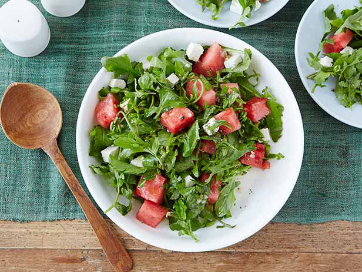

Julie Salad

Julie is a renowned salad maker, and the beauty generally lives in its simplicity. A visit to San Francisco isn't complete without
a salad prepped by Julie.
The problem, though, is there's no recipe for a Julie salad. This is an attempt to capture one that makes me think of eating dinner by the Ebert's pool.
Ingredients
- A bag of arugula
- Half a watermelon, cubed
- A block of feta cheese, crumbled
- Dill sprigs
- Olive oil to taste
- Salt to taste
- Fresh pepper to taste
Steps
- Mix arugula, watermelon, feta, and dill in a bowl.
- Add the amount of olive oil you like in a salad, generally a tablespoon or two should do.
- Season with salt and pepper to taste.
Home